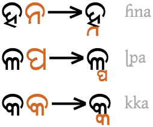
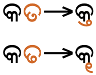
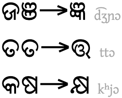
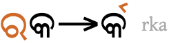
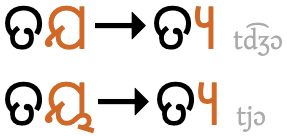
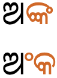

This page gathers basic information about the Odia (Oriya) script and its use for the Odia language. It aims (generally) to provide an introduction to the orthography and typographic features, and (specifically) to advise how to write Odia using Unicode.
Phonetic transcriptions on this page should be treated as an approximate guide, only. Many are more phonemic than phonetic, and there may be variations depending on the source of the transcription.
The Oriya script is used to write the Odia language of the Odisha (Orissa) state in India, as well as minority languages such as Khondi and Santali.u,487
Inuktitut syllabics are used in Canada by the Inuktitut-speaking Inuit of the territory of Nunavut and the Nunavik region in Quebec. The script is used by governmental agencies and in business, education, and media.
In 1976, the Language Commission of the Inuit Cultural Institute made Inuktitut syllabics the co-official script for the Inuit languages, along with the Latin script and standardised both orthographies.
The language and script were previously referrred to in English as Oriya, but in 2011 India changed the spelling to Odia in the constitution.sl2011
The Canadian syllabic script was first created in 1840 by the British missionary James Evans for writing the Swampy Cree dialect. The individual symbols may represent different phonemes for each language.
The syllabic script was first adapted to represent Inuktitut around the middle of the 1800s, again by missionaries, and early print runs occurred in the 1870s.w
@ The Odia script is an abugida. Consonants carry an inherent vowel which can be modified by appending vowel-signs to the consonant. See the table to the right for a brief overview of features for the modern thisLanguage orthography.
@ The Odia script is an alphabet. Both consonants and vowels are indicated by letters. See the table to the right for a brief overview of features for the thisLanguage language.
generic
XXX text runs left to right in horizontal lines.
essential features: cursive (+ degree of change), bicameral,
word separation
XX basic consonant letters, repertoire extensions, registers & tone calculation
consonant clusters: virama, conjunct types, RA
syllable-initial clusters
XX basic vowels, matres lectionis, other consonants, nasalisation
This section lists non-ASCII characters used to write the modern Odia language, and other characters in the Odia script block not used for the Odia language. For descriptions of usage, click on ↓.
Click on the sounds to reveal locations in this document where they are mentioned.
Phones in a lighter colour are non-native or allophones. Source Wikipedia.
Plain vowels
Diphthongs
Inherent vowel
The Odia inherent vowel is usually transcribed a but pronounced ɔ. So କ [U+0B15 ORIYA LETTER KA] is pronounced kɔ.d
Vowel-signs
Non-inherent vowel sounds that follow a consonant are represented using vowel-signs, eg. କି [U+0B15 ORIYA LETTER KA + U+0B3F ORIYA VOWEL SIGN I] is pronounced ki. Odia uses the following vowel-signs. They may be used on their own, or in combination with others (see composite_vowels).
ି␣ୀ␣ୁ␣ୂ␣େ␣ୋ␣ା␣ ␣ୈ␣ୌ
Odia vowel-signs are all combining characters. All vowel-signs are stored after the base consonant, and the font puts them in the correct place for display. This also applies for the 3 circumgraphs, where a single code point produces glyphs on more than one side of the consonant base.
Six vowel-signs are spacing marks, meaning that they consume horizontal space when added to a base consonant.
The 'primary' vowels have 'short' and 'long' written forms that hark back to the earlier Indic script origins, but modern Odia phonetics don't distinguish between long and short vowel sounds.
This is a combining mark that is always stored after the base consonant. The font places the glyph before the base consonant.
When an orthographic syllable begins with a consonant cluster that is rendered as a conjunct, the vowel-sign is rendered before the start of the syllable, eg. ସାଙ୍ଗେsāŋ͓gesaŋgewith
Circumgraphs
ୋ␣ ␣ୈ␣ୌ
Three vowels are produced by a single combining character with visually separate parts, that appear on different sides of the consonant onset eg. କୋko
All 3 of these circumgraphs can be written as a single character, or as two. See vowel_encoding.
Other symbols used for vowels
The following 'lengthening marks' may also be used to create vowel sounds as part of a decomposed circumgraph.
The only composite vowels occur when the circumgraphs are encoded as pairs of characters (see vowel_encoding).
Vowel absence
Odia uses ୍ [U+0B4D ORIYA SIGN VIRAMA], called halant, (the Odia equivalent of the Sanskrit virama) to indicate that the inherent vowel is not pronounced after a consonant, eg. the following explicitly represents just the sound k.କ୍k͓
The halant Unicode character is also used between 2 consonants to create a conjunct (see clusters), in which case it is not visible.
Word-final consonants without a following inherent vowel use the halant, If there is no halant, the vowel is pronounced, eg. ଅକ୍ଷର
Odia represents standalone vowels using a set of independent vowel letters. The set includes a character to represent the inherent vowel sound.
ଇ␣ଈ␣ଉ␣ଊ␣ଏ␣ଓ␣ଅ␣ଆ␣ ␣ଐ␣ଔ
Encoding choices
Visually, several of the standalone vowels and some vowel-signs look as it they could be composed of smaller parts. This section compares approaches and considers the relevance of Unicode Normalisation Form D (NFD) and Unicode Normalisation Form C (NFC) to give guidance on which approach is best.
Vowel-signs
Three of the circumgraphs can be written as a single character, or as two characters. In 2 of those cases, the second character is a lengthening mark.
Whichever approach is used, the vowel-signs must be typed and stored after the consonant characters they surround, and in left to right order.
Independent vowels
The approach listed in the table below is not equivalent when the text is normalised, and therefore only the precomposed approach in the left column should be used.u,487
In addition to the problem previously mentioned, combinations on rows 2 and 3 don't have the joining bar and so won't display correctly.
Vowel sounds mapped to characters
The following tables show how the above vowel sounds commonly map to characters or sequences of characters in the Odia language. Sounds are split according to whether they appear in a vowel-sign (
vs
) , or as a standalone vowel (
s).
Only one vocalic is regularly used in modern Odia, eg. କୃମି
ଋ␣ୃ
Other vocalics exist in the script, but are used for Sanskrit transcriptions.
ୠ␣ୄ␣ଌ␣ୢ␣ୡ␣ୣ
Consonants
Consonant sounds
The following represents the repertoire of the Odia language.
Click on the sounds to reveal locations in this document where they are mentioned.
Phones in a lighter colour are non-native or allophones. Source Wikipedia.
labial
dental
alveolar
post-
alveolar
retroflex
palatal
velar
glottal
stop
pb pʰbʰ
td tʰdʰ
ʈɖ ʈʰɖʰ
kɡ kʰɡʰ
affricate
t͡ʃd͡ʒ t͡ʃʰd͡ʒʰ
fricative
v
s
ɦ
nasal
m
n
ɳ
ɲ
ŋ
approximant
w
l
ɻɭ
j
trill/flap
ɾ
ɽɽʰ
Basic consonants
Stops
ପ␣ବ␣ଫ␣ଭ␣ତ␣ଦ␣ଥ␣ଧ␣ଟ␣ଡ␣ଠ␣ଢ␣କ␣ଗ␣ଖ␣ଘ
Affricates
ଚ␣ଛ␣ଜ␣ଝ␣ଯ
Fricatives
ସ␣ଷ␣ଶ␣ହଵ
Nasals
ମ␣ନ␣ଞ␣ଣ␣ଙ
Liquids
ୱ␣ର␣ଡ଼␣ଢ଼␣ଲ␣ଳ␣ୟ
When it occurs as the second element in a cluster, ବ [U+0B2C ORIYA LETTER BA] is commonly pronounced w. However, following m it tends to still be pronounced as a stop. For example, ଦ୍ୱାରଆମ୍ବ
Repertoire extensions
The letters WA and VA
These letters were added in Unicode version 4 to represent foreign sounds. ୱ [U+0B71 ORIYA LETTER WA] is used for Perso-Arabic or English loan words, and ଵ [U+0B35 ORIYA LETTER VA] was added in order to have an extension for v in academic or technical texts, such as for writing Sanskrit.e02
Nukta
The following basic letters are produced by combining ଼ [U+0B3C ORIYA SIGN NUKTA] with an existing consonant.
ଡ଼␣ଢ଼
Unicode also has precomposed forms of these letters, but they decompose under Unicode Normalisation Form C (NFC). Therefore, the Unicode Standard recommends the use of the decomposed sequence.
ଡ଼␣ଢ଼
The nukta should always be typed and stored immediately after the consonant it modifies, and before any combining vowels or diacritics.
The absence of a vowel sound between two or more consonants is visually indicated in one of the following ways.
Create a conjunct. There are a number of possibilities here:
Stacking
: Reduce a non-initial consonant in size and shape and position it below the first.
Conjoining
: The two consonants sit side by side, but the second consonant has a special shape.
Ligation
: Create a ligature combining the two shapes (where neither may be readily identified).
The
letter ra
has its own idiosyncratic way of combining with other consonants, whether it precedes or follows them.
Show a visible virama below the non-final consonants in the cluster.
Use the
anusvara
.
In Unicode, the conjunct formation is achieved by adding ୍ [U+0B4D ORIYA SIGN VIRAMA] between the consonants. The font hides the virama glyph automatically.
Stacking
The overwhelming majority of conjuncts in Odia are achieved by subjoining a reduced form of the non-initial consonant below the initial.

Examples of stacked conjuncts.
In most cases the non-initial consonant is just reduced in size, but in some cases the shape is changed.

Stacked conjuncts where the subjoined shape is significantly different from the normal shape.
Ligated forms
Certain combinations of consonants form conjuncts by producing a merged glyph that may not always look like either of the original letters.

Clusters that ligate into forms different from their original component shapes..
The following is a list of combinations that produce such an effect. Click on the items to see the component letters.
Like many other Indian scripts, ର [U+0B30 ORIYA LETTER RA] at the beginning of a cluster is represented idiosyncratically, and appears as a wedge-shaped superscript over the top right of the following consonant.

An initial RA in a cluster is rendered as a superscript over the following consonant..
Observation: Unlike Devanagari, it appears that the RA doesn't move over a following vowel-sign, such as ା [U+0B3E ORIYA VOWEL SIGN AA].
A trailing RA has a fairly regular appearance as a horizontal line below the preceding consonant, although that line usually joins with the preceding letter shape, and therefore causes a slight change to it, eg. କ୍ରk͓rkr
Conjoined consonants or a visible halanta
Three letters in particular tend not to stack, but sit alongside the initial consonant in the cluster.

Conjoined letters for the clusters tɲ, tʤ, and tj, respectively (top to bottom).
As can be seen above, the conjoined forms for ʤ and j are identical.
Observation: Noto, Nirmala, and Kangila fonts all show the halanta below the initial consonant in the first example at fig_conjoined, but Oriya MN and Oriya Sangam MN fonts don't show it.
Anusvara
Clusters that begin with a nasal sound may be written using anusvara, rather than by using a conjunct.u,488

The sound ɔŋkɔ written using a conjunct (top) and using anusvara followed by KA (bottom).
Consonant to script mapping
The following tables show how Odia consonant sounds commonly map to characters or sequences of characters.
This section brings together information about the following topics:
writing styles;
cursive text;
context-based shaping;
context-based positioning;
baselines, line height, etc.;
font styles;
case & other character transforms.
Odia text is not cursive (ie. joined up like Arabic).
The orthography has no case distinction, and no special transforms are needed to convert between characters.
Font styles
tbd
Structural boundaries & markers
Grapheme boundaries
Usually a typographic character unit correlates with the Unicode concept of grapheme clusters, but not always.
Conjuncts
Conjuncts and any dependent combining characters should never be split.
This creates a problem when dealing with Unicode grapheme clusters, because they stop after reaching a virama. So conjuncts usually contain multiple grapheme clusters. This produces incorrect segmentation as seen on the left in Figure 12. Applications need to tailor the grapheme cluster rules to avoid splitting conjuncts.
Segmentation of the word हिन्दी़hin͓dīˑ: using grapheme clusters (left), and how it should be (right).
Unfortunately, this is harder than it seems, because whether a conjunct is formed or not usually depends on the capabilities of the font – it cannot be determined solely by looking at the code points in memory. If a font doesn't contain the glyphs to create a conjunct it will render the consonant cluster with a visible virama. In that case, the grapheme cluster approach is appropriate.
Like most writing systems, certain characters are expected not to start or end a line. For example, periods and commas shouldn't start a line, and opening parentheses shouldn't end a line.
Character properties
Characters used for the Odia language have the following default assignments related to line-break properties, according to the Unicode Standard. Some tailoring may be needed for Odia language text.
AL (ordinary alphabetic and symbol characters) requires other characters to provide break opportunities; otherwise, unless tailored rules are applied, no line breaks are allowed between pairs of them.
B2 (break opportunity before and after) the EM DASH used to set off parenthetical text may allow line breaks before or after, but may also be affected by local orthographic rules.
BA (break after) indicates that it is normal to break after that character.
GL (non-breaking “glue") non-tailorable, non-breaking characters prohibit breaks on either side, but that prohibition can be overridden by SP or ZW.
IN (inseparable characters) is intended to be used consecutively. There is never a line break between two characters of this class.
NU (number) behaves like ordinary characters (AL) in the context of most characters but activate the prefix and postfix behavior of prefix and postfix characters.
PO (postfix numeric) usually follows a numerical expression and may not be separated from preceding numeric characters or preceding closing characters, even if one or more space characters intervene. For example, there is no break opportunity in “(12.00) %”.
QU (quotation) characters can be opening or closing, or even both, depending on usage. The default is to treat them as both opening and closing.
ZW (ZERO WIDTH SPACE, ZWSP) enables invisible break opportunities wherever SPACE cannot be used. It has no width, and is treated as if it wasn't there during justification.
The numeric style for the Odia language is decimal-based and uses the digits shown below.rmcs
୦␣୧␣୨␣୩␣୪␣୫␣୬␣୭␣୮␣୯
Examples:
୧␣୨␣୩␣୪␣୧୧␣୧୧␣୩୩␣୪୪␣୧୧୧␣୧୧୧␣୩୩୩␣୪୪୪
Styling initials
tbd
Page & book layout
This section is for any features that are specific to Odia and that relate to the following topics:
general page layout & progression;
grids & tables;
notes, footnotes, etc;
forms & user interaction;
page numbering, running headers, etc.
Character lists
Version 13.0 of the Unicode Standard has the following block dedicated to the Odia script (numbers in lists are non-ASCII only):
Odia53 letters, 21 marks, 16 numbers, 1 symbol : total 91
The Odia orthography described here uses characters from the following Unicode blocks.